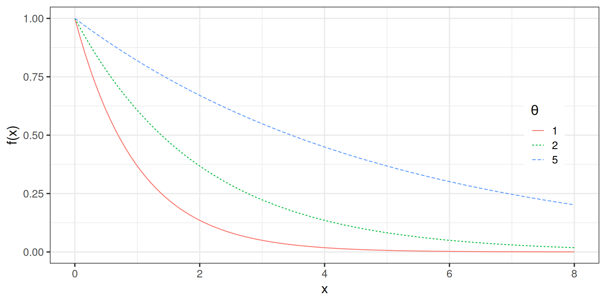
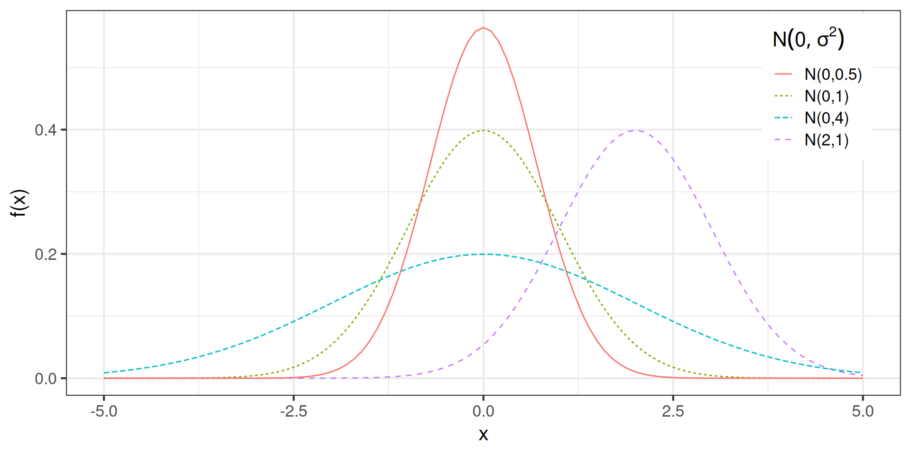

[1] 2Variáveis aleatórias
A estatística (e a ciência de dados) lida essencialmente com suposições do proceso gerador dos dados.
A incerteza associada a esse processor gerador dos dados é baseada em eventos de probabilidade.
A função que relaciona os eventos de probabilidade e os valores que os dados podem assumir é chamada de variável aleatória.
Uma variável aleatória é uma função que leva do espaço amostral aos reais.
\[X : \Omega \to \mathbb{R} \]
Quando uma v.a. \(X\) usualmente assume valores enumeráveis, a chamamos de v.a. discreta. Se ela assume valores em um espaço continuo tem-se uma v.a. contínua,
Seja \(X\) o número de caras no lançamento de 2 moedas.
| \(\omega\) | \(X(\omega)\) | \(\mathbb{P}(X(\omega))\) |
|---|---|---|
| {Co,Co} | \(X=0\) | 1/4 |
| {Ca,Co} | \(X=1\) | 1/4 |
| {Co,Ca} | \(X=1\) | 1/4 |
| {Ca,Ca} | \(X=2\) | 1/4 |
| \(X(\omega) = x\) | \(\mathbb{P}(X = x)\) |
|---|---|
| \(X=0\) | 1/4 |
| \(X=1\) | 1/2 |
| \(X=2\) | 1/4 |
Qualquer valor de \(X\) diferente de 0,1,ou 2 tem probabilidade zero de ocorrer.
A função de distribuição acumulada é uma função \(F_X: \mathbb{R} \to [0,1]\) definida por
\[F_X(x) = \mathbb{P}(X \leq x). \]
A função de distribuição de probabilidade do número de caras no lançamento de 2 moedas é dado por
\[F_X(x) = \left\{\begin{array}{cc} 0, & x < 0 \\ 1/4, & 0\leq x < 1 \\ 3/4, & 1\leq x < 2 \\ 1, & x \geq 1 \end{array}\right.\]
Esse é um exemplo de v.a. discreta.
Se \(X\) é uma v.a. discreta, então definimos a função de probabilidade para \(X\) por \[ f_X(x) = p_X(x) = \mathbb{P}(X = x) \]
\[f_X(x) = \left\{\begin{array}{cc} 1/4, & x = 0 \\ 1/2, & x=1 \\ 1/4, & x = 2 \\ 0, & c.c. \end{array}\right.\]
Seja \(X\) o número de caras em \(n\) lançamentos de uma moeda com probabilidade de cara \(\theta\).
Seja \(X\) o número de caras em \(n\) lançamentos de uma moeda com probabilidade de cara \(\theta\).
Seja \(X\) o número de caras em \(n\) lançamentos de uma moeda com probabilidade de cara \(\theta\).
Definição. Dizemos que \(X\) é uma variável aleatória contínua, se existe uma função \(f_X\) tal que
A função de probabilidade acumulada de uma variável aleatória contínua é dada por \[F_X(x) = \mathbb{P}(X \leq x) = \int_{-\infty}^x f_X(t) dt\]
Em todos os pontos que \(F_X\) é diferenciável, \(f_X(x) = F'_X(x)\).
Seja \(X\) um ponto aleatoriamente selecionado no intervalo \((a,b)\), e que todos os pontos nesse intervalo são equiprováveis. Ou seja, \[f_X(x) = \left\{ \begin{array}{ll} k, & x \in (a,b) \\ 0 & c.c.\end{array}\right.\]
Para que \(f_X\) seja uma função de densidade ela deve ser positiva e integrar 1.
\[\int_a^b k dx = k (b-a) = 1 \to k = \frac{1}{b-a}\]
Seja \(X\) uma v.a. com função de probabilidade acumulada \(F_X\). A função quantil ou função acumulada inversa é dada por \[F_X^{-1}(q) = \mathbb{Q}_X(q) = \inf\left\{ x : F_X(x) > q\right\}\]
Chamamos de \(F_X^{-1}(1/4)\) de primeiro quartil, \(F_X^{-1}(1/2)\) de mediana (ou segundo quartil) e \(F_X^{-1}(3/4)\) de terceiro quartil.
Definição. O valor esperado, ou a média, ou o primeiro momento, de uma variável aleatória \(X\) é definido como \[\mathbb{E}(X) = \left\{ \begin{array}{ll} \int_{x \in \mathbb{R}} x f_X(x) dx & \mbox{se } x \mbox{ é contínua}, \\ \sum_{x} x f_X(x) & \mbox{se } x \mbox{ é discreta}. \\ \end{array}\right.\]
Seja \(k>1\) inteiro. Dizemos que \(X\) segue uma uniforme discreta se \[ f_X(x) = \left\{ \begin{array}{ll} \frac{1}{k} & \mbox{se } x=1,2,\ldots,k, \\ 0 & \mbox{c.c}. \\ \end{array}\right.\]
\[\mathbb{E}(X) = \sum_x xf_X(x) = \sum_{x=1}^k x\frac{1}{k} = \frac{1}{k} k \frac{(k+1)}{2} = \frac{k+1}{2}\]
Seja \(X\) uma v.a. que representa um evento binário. \(X=1\) se o evento ocorre, e \(X=0\) se o evento não ocorre. Suponha também que \(\theta\) é a probabilidade de ocorrência desse evento. Então dizemos que \(X\) segue uma distribuição Bernoulli, \(X \sim Bern(\theta)\), se \[ f_X(x) = \left\{ \begin{array}{ll} \theta^x(1-\theta)^{1-x} & \mbox{se } x=0,1, \\ 0 & \mbox{c.c}. \\ \end{array}\right.\]
\[\mathbb{E}(X) = \sum_{x=0}^{1} x \theta^x(1-\theta)^{1-x} = \theta\]
Seja \(X\) a soma de \(n\) experimentos de Bernoulli com probabilidade \(\theta\). Dizemos que \(X\) segue uma distribuição Binomial, \(X \sim Binom(n, \theta)\), se \[ f_X(x) = \left\{ \begin{array}{ll} {n\choose x }\theta^x(1-\theta)^{1-x} & \mbox{se } x=0,1,2,\ldots,n, \\ 0 & \mbox{c.c}. \\ \end{array}\right.\]
\[\mathbb{E}(X) = \sum_{x=0}^{n} x {n\choose x } \theta^x(1-\theta)^{n-x} = \cdots = n\theta\]
Seja \(X\) uma variável aleatória que assume valores \(0,1,2,\ldots\). Dizemos que \(X\) segue uma distribuiçao de Poisson com parâmetro \(\theta\), \(X \sim Pois(\theta)\), se \[ f_X(x) = \left\{ \begin{array}{ll} \frac{\theta^x}{x!} e^{-\theta} & \mbox{se } x=0,1,2,\ldots, \\ 0 & \mbox{c.c}. \\ \end{array}\right.\]
\[\mathbb{E}(X) = \sum_{x=0}^\infty x \frac{\theta^x}{x!} e^{-\theta}= \cdots = \theta\]
Binomial(n,p) \(\to\) Poisson(\(\theta\)), se \(n\to\infty\) e \(np\to\theta\).
Seja \(X\) uma variável aleatória que assume qualquer valor real no intevalo \((a,b)\). Dizemos que \(X\) segue uma distribuiçao uniforme no intervalo, \(X \sim U(a,b)\), se \[ f_X(x) = \left\{ \begin{array}{ll} \frac{1}{b-a} & \mbox{se } x\in (a,b), \\ 0 & \mbox{c.c}. \\ \end{array}\right.\]
\[\mathbb{E}(X) = \int_a^b \frac{x}{b-a} dx = \cdots = \frac{b+a}{2}\]
Seja \(X\) uma variável aleatória nos reais positivos. Dizemos que \(X\) segue uma distribuiçao exponencial com parâmetro \(\theta\), \(X \sim Exp(\theta)\), se \[ f_X(x) = \left\{ \begin{array}{ll} \theta e^{-x\theta} & \mbox{se } x > 0, \\ 0 & \mbox{c.c}. \\ \end{array}\right.\]
\[\mathbb{E}(X) = \int_0^\infty x \theta e^{-x\theta} dx = \cdots = \theta\]
\(X \sim Exp(\theta)\)
\(\mathbb{P}(X > x) = \int_x^\infty \theta e^{-\theta x} dx = \cdots = 1 - e^{-\theta x}\)
Seja \(X\) uma variável aleatória nos reais. Dizemos que \(X\) segue uma distribuiçao Normal, ou distribuição Gaussiana, com parâmetros \((\mu, \sigma^2)\), \(X \sim N(\mu, \sigma^2)\), se \[ f_X(x) = \frac{1}{\sqrt{2\pi \sigma^2}} e^{-\frac{1}{2\sigma^2}(x-\mu)^2}, \quad x \in \mathbb{R}\]
\[\mathbb{E}(X) = \int_{-\infty}^\infty x f_X(x) dx = \cdots = \mu\]
\(X \sim N(\mu, \sigma^2)\)
When you click the Render button a document will be generated that includes:
When you click the Render button a document will be generated that includes:
content before the pause
content after the pause
When you click the Render button a presentation will be generated that includes both content and the output of embedded code. You can embed code like this:
[1] 2Equação no texto \(A \in (0,\alpha)\) ou como equação centrada
\[p(\theta \mid x) = \frac{p(\theta) p(x \mid \theta)}{\int_\theta p(\theta) p(x \mid \theta)d\theta}\]